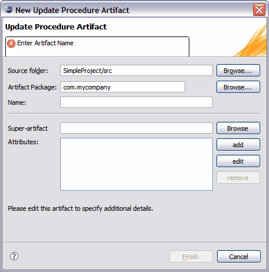

You can create and edit Update Procedure Artifacts through the New Update Procedure Artifact wizard. This section details the New Update Procedure Artifact wizard and explains how to edit your artifacts using the Tigerstripe Workbench entity perspective.
The New Update Procedure Artifact wizard allows you to create a new update procedure artifact within a Tigerstripe project. Complete the following procedure to open the New Update Procedure Artifact wizard.
To open the New Update Procedure Artifact wizard and create your first update procedure artifact:
- Ensure that the Tigerstripe Perspective is active. For more information, refer to Tigerstripe Perspective.
- Click Tigerstripe, select New, and click Update Procedure. Alternatively, you can select the Update Procedure icon on the Tigerstripe toolbar (). The New Update Procedure Artifact wizard appears.
- Enter a name for the named query artifact in the Name text box and click Finish.

As with other types of Tigerstripe artifact wizards, the New Update Procedure Artifact wizard requires that you enter a set of parameters before you can successfully create your notification artifact. The following outlines the information available on the New Update Procedure Artifact wizard.
- Source Project: the source project in which the update procedure artifact is being created. In most cases, Tigerstripe is able to pre-populate this field based on the context. If not populated, or if the wrong project was selected, click Browse to select the correct Tigerstripe project in which the artifact is to be created.
- Artifact Package: each artifact is created within the scope of a package. This field must contain a valid package name. The New Update Procedure Artifact wizard will reject all invalid package names.
- Artifact Name: a valid name for the artifact. This name uniquely identifies the artifact within the package. The New Update Procedure Artifact wizard will reject all invalid artifact names.
 Editing Update Procedure Artifacts
Editing Update Procedure Artifacts

© copyright 2005, 2006, 2007 Cisco Systems, Inc. - All rights reserved